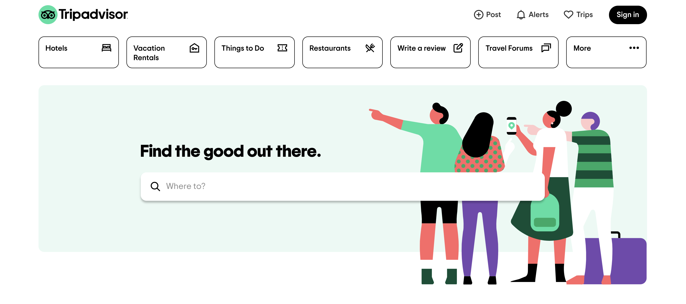

The website I chose to model my site after is tripadvisor.com. I thought Trip Advisor would be a good site to pick because their objective is similar to mine. Instead of vacation planning, my site assists with golf outing planning.
This page of the site will provide locations of courses near the user. A rating out of 5 will be provided along with the pricing for 9 and 18 holes. The user will also have the option of selecting different areas in the U.S. if the golfer plans to play elsewhere.
Here the user will be able to read reviews about the golf course. After reading the user will be able to decide whether or not they want to play there.
This page will allow users to post their scores to the site after playing at a course for everyone else to see. This will bring an interactive aspect to the site and encourage others to play more golf, return to the site and post scores.
This section will have videos and lessons for users to watch. These will cover topics like practice drills, and new techniques to implement. The goal of this is to help a golfer that is looking to improve their game, or learn new things.
This page of the site allows users to write their own reviews on the course they played at. These will be posted to the Reviews page and will be visable to other users.
The target audience for this site are all golfers no matter the skill level. Anyone that enjoys being outside and playing golf is welcome to use this site. Beginners may come to this site seeking advice or looking for a good course to play at that is enjoyable for lower skill players. Higher skill players may visit this site to plan their next golf trip, post scores they're proud of, or find help to improve some aspect of their game.